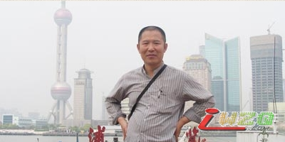

13日晚我与姚金蕊 “起个大早赶个晚集”开车前13分钟才赶到车站，等的刘彤及胡瑜（胡瑜妈）火急火燎。无论咋样踏上了北京到上海的T109，开始了“第一届京沪擂台赛”揭幕战的征程。姚金蕊做为北京先锋，由于对新的连珠技术的匮乏，精神相当紧张，一上车就抱着笔记本查阅棋谱库。次锋胡瑜也许是最小的缘故，到是悠哉悠哉。……
9点15 到达上海，我们四人除了胡瑜没吃了的肯德鸡和一夜 的颠簸留在车上，精神还算饱满的踏上上海，哈哈，在这之前，上海负责人顾炜一再短信“人手紧张，不能到车站迎接，让我们乘地铁1号线到漕宝路”……。尽管不是第一次来上海，但走出车站找地铁口、买卡上车还是费不小劲。上海地铁比北京地铁复杂，站台正在进行封闭工程，闪过十 个站台到达漕宝路，按指引走出地铁，上来就看见推着自行车的顾炜，寒喧之后过天桥到准三星级达之茵凤祥酒店，分头入住302、303，环境设施不错，由于晕车，姚金蕊进屋就躺下休息。……12点我们去餐厅就餐，刘彤首先发现了餐厅中摆着有遗像，“嘿嘿，真不吉利”，接着就看见戴孝持遗像的进出餐厅的一个接一个，一问方知，此地相邻殡仪馆，上海人有宴请吊客祭奠故人的习俗，称“豆腐羹宴”。……
1点我们在顾炜的引领下，步行十分多钟到达上海光大国际展会中心大酒店的运动休闲天地包房，一进屋，即刻感到空气不畅，顾炜也感到空间太小（10几平），立刻让棋手、裁判、直播、记谱等以外人员再包一间房，并找来一台立式电扇输通空气。电于没有网线，我的笔记本也用不上了，只有顾的笔记本采用无线上网搞直播了。
1：30左右， 中华连珠网理事长罗锦伟代表组委会为大赛揭幕，并预祝比赛顺利，选手赛出水平。 刘彤代表北京队发言，虽然没有机会作为选手参加这样的比赛，但是能够作为教练带领自己的学生参赛感到非常荣幸，希望今后京沪擂台赛能继续举办。 葛凌峰代表上海队发言，比赛从意向到今天举办，经历了较长一段时间，两地队伍阵容由老中青三代组合，也充分体现中国五子棋十年发展的成果。
上海五子棋委员会主要负责人顾炜七段，上海五子棋委员会负责人、上海段赛事裁判长黄民城二段，中国连珠网特派记者姚志勇四段，上海段赛事裁判员周彪初段、易伊神6级，北京队先锋姚金蕊四段、次锋胡瑜四段，上海队先锋顾婉卿三段、次锋俞满江五段也出席揭幕式。
揭幕式后裁判长黄民城宣读比赛规程，并主持了猜先，经猜先由姚金蕊执黑开局，姚开出岚月，顾交换，姚走白4立二……，由于我没法上网只好向网上直播了孙立京，及QQ直播的刘真发行棋坐标于短信，但一操作太麻烦了，干脆打手机报坐标……。看来顾对局面很熟悉应对自如，这一下让姚陷入困境（本以为这个变化鲜为人知），在后手唯一防的况下无法求变，过早的将主动权，更可以说将胜局交给了对方。揭幕战就这样以一盘没有对弈者思想的摆谱，而上海抢到擂主而结束。收枰后姚金蕊深有感触的说：看来不能轻信别人，只有以我为主才能掌握主动权，如果我选择我喜欢的山月开局不至于输的这样没思想。
走出赛场，小雨滴滴……由于我的笔记本处理图片的程序出现问题，将所拍照片简单处理传给了“叶子”，叶子对其质量感到很不满意。
晚饭在酒店附近的一个东北酒家就餐，我们四个人还有顾炜、葛凌峰、易伊神、吴杰，顾炜点菜还满丰盛，还点了一个特菜“葱烧乌苏里江马哈鱼”，也许是首战胜利太高兴了吧，哈哈！晚上，真对第一场失利的严峻形势，刘彤为挑战的次锋胡瑜进行了战术调整，……。
次日早八点，葛凌峰来到酒店陪伴我们早餐并到达赛场，姚金蕊自去车站择车去南京看望同学。也许是为第二场更好的直播准备案头，顾炜近九点才到，根据叶子的提议，我亲自动手对赛室进行了设施简化，使空间达到最佳，北京老朋友顾伟国今天也到达赛场。
九点半京沪五子棋擂台赛第二场 由北京次锋胡瑜挑战上海先锋顾婉卿的比赛开始，按规则，胡瑜选择由顾开局，顾开松月，胡交换，白天地指，顾留下五手一打考验胡，交换到第十四手，胡瑜没有急于按常规进入复杂的攻杀进程，而是稳稳的走出出乎意料的15，将优势进一步扩大，这一手妙在先手情况下求变，将局势引向对手不熟的局面。结果顾面对黑左右两块优势，顾此失彼走出败点16，使黑一蹴而就取得胜利。【有志注：此处删除文字若干】
赛后葛凌峰做东设宴，为我们饯行。后葛又陪我们逛了城隍庙及外滩，送我们至车站。19：07我们登上了返京的Z22次，为了节省开支，刘彤带胡瑜做软卧（Z字头车只有软卧及软座），我一人做软座。……次日列车准时抵京，将胡瑜交于她母亲，这样就结束了京沪擂台赛揭幕战行程。
在上海看到